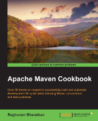

External Resources on Maven
Books on Maven
| Title | Covers | Published | Authors | Buy the Book | |
|---|---|---|---|---|---|
 |
Apache Maven Cookbook | Maven 3 | Packt Publishing (August 2015) | Raghuram Bharathan | Packt, Amazon |
| Apache Maven 3.0 Cookbook | Maven 3 | Packt Publishing (August 2011) | Srirangan | Amazon |
Videos on Maven
| Title | Covers | Published | Authors | Watch the Video |
|---|---|---|---|---|
| Maven Marvels: Project Generation at Warp Speed | Maven 3 and above | October 2024 | Giovanni van der Schelde | Youtube |
| Wait no more, here comes Maven 4! | Maven 4 | October 2024 | Robert Scholte, Maarten Mulders | Youtube |
| How to use Apache Maven Toolchains in an Apache Maven Project | Maven 3.8.6 and above | July 2022 | Karl Heinz Marbaise | Youtube |
| Getting started with Apache Maven | Maven 2.2.1, and above | Packt Publishing (September 30, 2013) | Russell Gold | Packt |
Articles on Maven
If you are writing an article on Maven we suggest contacting the developers on the mailing list as we would be happy to provide feedback to help ensure accuracy in your article. Just ping us on the dev mailing list to get in touch.
| Title | Publisher | Author | Published |
|---|---|---|---|
| Maven Marvels - The Maven Archetype Plugin | Giovanni van der Schelde | September 2024 | |
| Handling sensitive data in Maven | Tamás Cservenák | 7 December 2024 | |
| Maven4 ante portas! (Part 1) | Tamás Cservenák | 7 December 2024 | |
| Maven 4 - Part I - Easier Versions | Karl Heinz Marbaise | 31 March 2024 | |
| From Maven 3 to Maven 5 | JVM Advent | Hervé Boutemy | December 2021 |
| Introduction to Maven Toolchains | Maarten Mulders | March 2021 | |
| What's New in Maven 4 | Maarten Mulders | November 2020 | |
| Customise the Maven Release process | Maarten Mulders | January 2020 | |
| Create a Customized Build Process in Maven | John Casey | August 2009 | |
| Introduction to m2eclipse | TheServerSide | Tim O'Brien, Bruce Snyder, Eugene Kuleshov | July 2008 |
| Setting up the Internal Repository | The Server Side | Avneet Mangat | December 2015 |
| FAQ for Maven and Continuum (in French) | Developpez.com | Eric Reboisson | 11 October 2006 |
| Java Posse #070 - Interview with Brett Porter of Maven | Java Posse | Tor Norbye, Carl Quinn, Dick Wall, Joe Nuxoll, Brett Porter | 18 July 2006 |
| The Maven 2 POM demystified | InfoWorld | Eric Redmond | 29 May 2006 |
| Maven: Building Complex Systems | Dr.Dobb's | Gigi Sayfan | 21 April 2006 |
| Get the most out of Maven site generation | InfoWorld | John Ferguson Smart | 27 February 2006 |
| An introduction to Maven 2 | InfoWorld | John Ferguson Smart | 5 December 2005 |
| Building J2EE Projects with Maven | OnJava | Vincent Massol | 7 September 2005 |
| Master and Commander by Julien Dubois | Oracle | Julien Dubois | November 2004 |